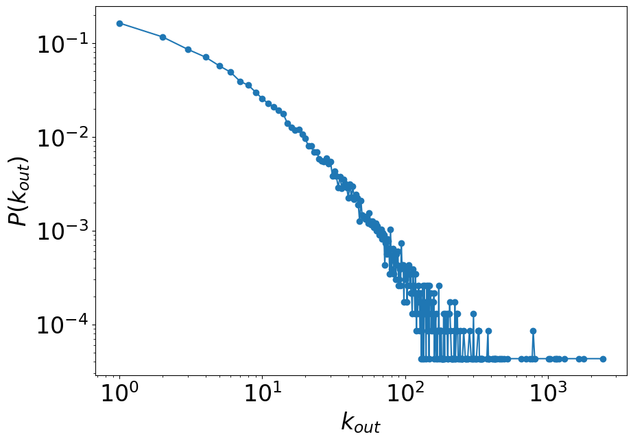
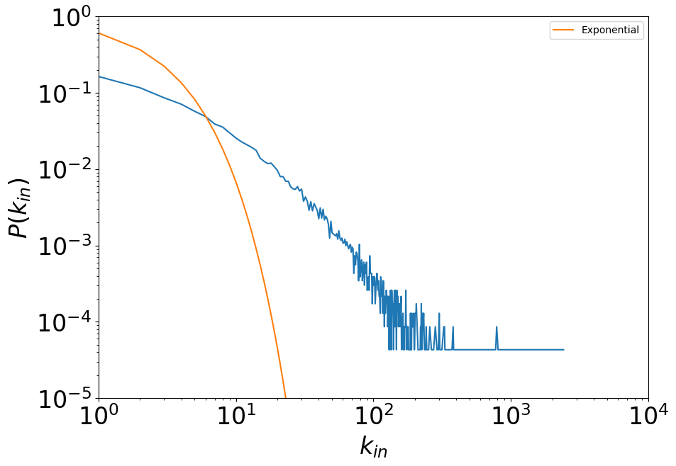

2. Basic network import and representation#
Here, we play a bit with some network datasets.
We analyze the dataset ‘cit-HepTh’ available from the SNAP repository: http://snap.stanford.edu/data/index.html
There are several other repositories of network datasets, for instance:
import sys, math
%pylab inline
%pylab is deprecated, use %matplotlib inline and import the required libraries.
Populating the interactive namespace from numpy and matplotlib
import collections as col
We use a dictionary that associates a key (node) to a list of nodes (neighbours)
links_out = col.defaultdict(list)
print(links_out)
defaultdict(<class 'list'>, {})
We open the file containing the network and read each line
filepath = "./../datasets/cit-HepTh.txt"
fh = open(filepath, "r")
fh
<_io.TextIOWrapper name='./../datasets/cit-HepTh.txt' mode='r' encoding='UTF-8'>
s = fh.readlines()
s
['# Directed graph (each unordered pair of nodes is saved once): Cit-HepTh.txt \n',
'# Paper citation network of Arxiv High Energy Physics Theory category\n',
'# Nodes: 27770 Edges: 352807\n',
'# FromNodeId\tToNodeId\n',
'1001\t9304045\n',
'1001\t9308122\n',
'1001\t9309097\n',
'1001\t9311042\n',
'1001\t9401139\n',
'1001\t9404151\n',
'1001\t9407087\n',
'1001\t9408099\n',
'1001\t9501030\n',
'1001\t9503124\n',
'1001\t9504090\n',
'1001\t9504145\n',
'1001\t9505025\n',
'1001\t9505054\n',
'1001\t9505105\n',
'1001\t9505162\n',
'1001\t9506048\n',
'1001\t9506112\n',
'1001\t9506144\n',
'1001\t9507050\n',
'1001\t9507158\n',
'1001\t9508094\n',
'1001\t9508155\n',
'1001\t9510142\n',
'1001\t9510225\n',
'1001\t9510234\n',
'1001\t9511030\n',
'1001\t9511171\n',
'1001\t9601108\n',
'1001\t9602022\n',
'1001\t9602114\n',
'1001\t9603003\n',
'1001\t9603150\n',
'1001\t9603161\n',
'1001\t9603167\n',
'1001\t9605184\n',
'1001\t9605222\n',
'1001\t9606017\n',
'1001\t9606040\n',
'1001\t9607163\n',
'1001\t9607207\n',
'1001\t9608086\n',
'1001\t9609070\n',
'1001\t9609071\n',
'1001\t9609239\n',
'1001\t9611137\n',
'1001\t9612108\n',
'1001\t9701162\n',
'1001\t9702094\n',
'1001\t9702155\n',
'1001\t9702198\n',
'1001\t9703082\n',
'1001\t9703166\n',
'1001\t9704097\n',
'1001\t9705030\n',
'1001\t9705044\n',
'1001\t9705104\n',
'1001\t9705220\n',
'1001\t9706005\n',
'1001\t9707014\n',
'1001\t9707042\n',
'1001\t9707049\n',
'1001\t9710230\n',
'1001\t9711036\n',
'1001\t9711104\n',
'1001\t9712028\n',
'1001\t9712042\n',
'1001\t9802194\n',
'1001\t9805056\n',
'1001\t9805206\n',
'1001\t9806094\n',
'1001\t9810188\n',
'1001\t9811217\n',
'1001\t9905036\n',
'1001\t9907041\n',
'1001\t9908007\n',
'1001\t9908144\n',
'1001\t9909108\n',
'1001\t9909120\n',
'1001\t9909229\n',
'1001\t9910238\n',
'1001\t9910248\n',
'1001\t9910268\n',
'9304045\t9204040\n',
'9308122\t9203084\n',
'9308122\t9204035\n',
'9308122\t9205041\n',
'9308122\t9207049\n',
'9308122\t9207111\n',
'9308122\t9301042\n',
'9308122\t9301043\n',
'9309097\t9203084\n',
'9309097\t9205041\n',
'9309097\t9301042\n',
'9309097\t9301043\n',
'9311042\t9301042\n',
'9311042\t9301043\n',
'9401139\t9201015\n',
'9401139\t9201040\n',
'9401139\t9201047\n',
'9401139\t9202046\n',
'9401139\t9202059\n',
'9401139\t9202092\n',
'9401139\t9203008\n',
'9401139\t9203031\n',
'9401139\t9204035\n',
'9401139\t9204037\n',
'9401139\t9204040\n',
'9401139\t9204046\n',
'9401139\t9205046\n',
'9401139\t9205060\n',
'9401139\t9205062\n',
'9401139\t9205068\n',
'9401139\t9206023\n',
'9401139\t9206051\n',
'9401139\t9206078\n',
'9401139\t9207016\n',
'9401139\t9207049\n',
'9401139\t9207111\n',
'9401139\t9208076\n',
'9401139\t9209052\n',
'9401139\t9210015\n',
'9401139\t9210021\n',
'9401139\t9210121\n',
'9401139\t9211021\n',
'9401139\t9211041\n',
'9401139\t9212089\n',
'9401139\t9301005\n',
'9401139\t9301042\n',
'9401139\t9301043\n',
'9401139\t9302033\n',
'9401139\t9302069\n',
'9401139\t9302126\n',
'9401139\t9303032\n',
'9401139\t9304155\n',
'9401139\t9305185\n',
'9401139\t9308042\n',
'9404151\t9305139\n',
'9404151\t9309140\n',
'9407087\t9204102\n',
'9407087\t9211097\n',
'9407087\t9401139\n',
'9407087\t9402002\n',
'9407087\t9402005\n',
'9407087\t9402044\n',
'9407087\t9403195\n',
'9407087\t9403198\n',
'9407087\t9406128\n',
'9408099\t9204102\n',
'9408099\t9211097\n',
'9408099\t9402002\n',
'9408099\t9402005\n',
'9408099\t9402044\n',
'9408099\t9403198\n',
'9408099\t9407087\n',
'9501030\t9205081\n',
'9501030\t9207053\n',
'9501030\t9208055\n',
'9501030\t9209016\n',
'9501030\t9211056\n',
'9501030\t9303057\n',
'9501030\t9305142\n',
'9501030\t9305185\n',
'9501030\t9306052\n',
'9501030\t9306125\n',
'9501030\t9311120\n',
'9501030\t9402002\n',
'9501030\t9402032\n',
'9501030\t9406105\n',
'9501030\t9406128\n',
'9501030\t9406198\n',
'9501030\t9407021\n',
'9501030\t9407087\n',
'9501030\t9407111\n',
'9501030\t9408040\n',
'9501030\t9408074\n',
'9501030\t9408083\n',
'9501030\t9408099\n',
'9501030\t9409021\n',
'9501030\t9410167\n',
'9501030\t9410210\n',
'9501030\t9412184\n',
'9503124\t9205027\n',
'9503124\t9401139\n',
'9503124\t9402002\n',
'9503124\t9406012\n',
'9503124\t9407087\n',
'9503124\t9407111\n',
'9503124\t9408083\n',
'9503124\t9411149\n',
'9503124\t9411178\n',
'9503124\t9501030\n',
'9504090\t9201059\n',
'9504090\t9309097\n',
'9504090\t9309152\n',
'9504090\t9407087\n',
'9504145\t9301042\n',
'9504145\t9309097\n',
'9505025\t9301042\n',
'9505025\t9309097\n',
'9505025\t9310067\n',
'9505025\t9402002\n',
'9505025\t9404151\n',
'9505025\t9410167\n',
'9505025\t9412115\n',
'9505025\t9501030\n',
'9505025\t9501068\n',
'9505025\t9502072\n',
'9505025\t9503124\n',
'9505025\t9504027\n',
'9505025\t9504047\n',
'9505025\t9504090\n',
'9505054\t9304154\n',
'9505054\t9402002\n',
'9505054\t9410167\n',
'9505054\t9411149\n',
'9505054\t9501022\n',
'9505054\t9502057\n',
'9505054\t9503124\n',
'9505054\t9503179\n',
'9505054\t9504027\n',
'9505054\t9504047\n',
'9505105\t9308083\n',
'9505105\t9308122\n',
'9505105\t9402002\n',
'9505105\t9407087\n',
'9505105\t9408099\n',
'9505105\t9410167\n',
'9505105\t9411048\n',
'9505105\t9411057\n',
'9505105\t9501111\n',
'9505105\t9502077\n',
'9505105\t9503124\n',
'9505105\t9503163\n',
'9505105\t9504006\n',
'9505105\t9504027\n',
'9505105\t9504034\n',
'9505105\t9504047\n',
'9505105\t9504090\n',
'9505105\t9504145\n',
'9505105\t9505023\n',
'9505105\t9505053\n',
'9505105\t9505062\n',
'9505162\t9302103\n',
'9505162\t9305069\n',
'9505162\t9305185\n',
'9505162\t9309140\n',
'9505162\t9402044\n',
'9505162\t9404151\n',
'9505162\t9406032\n',
'9505162\t9407087\n',
'9505162\t9408099\n',
'9505162\t9409188\n',
'9505162\t9410167\n',
'9505162\t9411048\n',
'9505162\t9501030\n',
'9505162\t9501068\n',
'9505162\t9502072\n',
'9505162\t9503124\n',
'9505162\t9504006\n',
'9505162\t9504027\n',
'9505162\t9504034\n',
'9505162\t9504047\n',
'9505162\t9504090\n',
'9505162\t9504145\n',
'9505162\t9505023\n',
'9505162\t9505053\n',
'9505162\t9505105\n',
'9506048\t9402002\n',
'9506048\t9410167\n',
'9506048\t9501030\n',
'9506048\t9503124\n',
'9506048\t9504047\n',
'9506048\t9505054\n',
'9506048\t9505162\n',
'9506112\t9308083\n',
'9506112\t9308122\n',
'9506112\t9406055\n',
'9506112\t9407087\n',
'9506112\t9408036\n',
'9506112\t9408099\n',
'9506112\t9411048\n',
'9506112\t9411234\n',
'9506112\t9412200\n',
'9506112\t9502072\n',
'9506112\t9504006\n',
'9506112\t9504034\n',
'9506112\t9504090\n',
'9506112\t9505105\n',
'9506112\t9505162\n',
'9506112\t9506075\n',
'9506112\t9506091\n',
'9506144\t9407087\n',
'9506144\t9408036\n',
'9506144\t9408099\n',
'9506144\t9411048\n',
'9506144\t9412200\n',
'9506144\t9501030\n',
'9506144\t9501068\n',
'9506144\t9502072\n',
'9506144\t9503124\n',
'9506144\t9504145\n',
'9506144\t9505105\n',
'9506144\t9505162\n',
'9506144\t9506024\n',
'9506144\t9506075\n',
'9506144\t9506112\n',
'9507050\t9305185\n',
'9507050\t9308083\n',
'9507050\t9404151\n',
'9507050\t9407087\n',
'9507050\t9410167\n',
'9507050\t9411234\n',
'9507050\t9503124\n',
'9507050\t9504090\n',
'9507050\t9504145\n',
'9507050\t9505054\n',
'9507050\t9505105\n',
'9507050\t9505162\n',
'9507050\t9506048\n',
'9507050\t9506077\n',
'9507050\t9506110\n',
'9507050\t9506112\n',
'9507050\t9506160\n',
'9507050\t9506194\n',
'9507050\t9507027\n',
'9507158\t9207060\n',
'9507158\t9410167\n',
'9507158\t9501068\n',
'9507158\t9502072\n',
'9507158\t9503124\n',
'9507158\t9503212\n',
'9507158\t9504047\n',
'9507158\t9504090\n',
'9507158\t9504145\n',
'9507158\t9505105\n',
'9507158\t9505162\n',
'9507158\t9506126\n',
'9507158\t9506144\n',
'9507158\t9506150\n',
'9507158\t9506194\n',
'9507158\t9507048\n',
'9508094\t9205027\n',
'9508094\t9207053\n',
'9508094\t9303057\n',
'9508094\t9303106\n',
'9508094\t9305142\n',
'9508094\t9305185\n',
'9508094\t9306052\n',
'9508094\t9311120\n',
'9508094\t9402002\n',
'9508094\t9404151\n',
'9508094\t9406105\n',
'9508094\t9406198\n',
'9508094\t9407111\n',
'9508094\t9408083\n',
'9508094\t9410073\n',
'9508094\t9410167\n',
'9508094\t9411187\n',
'9508094\t9412184\n',
'9508094\t9412200\n',
'9508094\t9501030\n',
'9508094\t9503124\n',
'9508094\t9504027\n',
'9508094\t9504047\n',
'9508094\t9504081\n',
'9508094\t9504095\n',
'9508094\t9506057\n',
'9508094\t9506126\n',
'9508094\t9507090\n',
'9508094\t9508056\n',
'9508155\t9304135\n',
'9508155\t9308083\n',
'9508155\t9308122\n',
'9508155\t9309140\n',
'9508155\t9406055\n',
'9508155\t9407087\n',
'9508155\t9408036\n',
'9508155\t9410167\n',
'9508155\t9411048\n',
'9508155\t9411057\n',
'9508155\t9412209\n',
'9508155\t9501030\n',
'9508155\t9501068\n',
'9508155\t9502072\n',
'9508155\t9503124\n',
'9508155\t9503163\n',
'9508155\t9504006\n',
'9508155\t9504027\n',
'9508155\t9504034\n',
'9508155\t9504090\n',
'9508155\t9504145\n',
'9508155\t9505023\n',
'9508155\t9505053\n',
'9508155\t9505062\n',
'9508155\t9505073\n',
'9508155\t9505105\n',
'9508155\t9505150\n',
'9508155\t9505162\n',
'9508155\t9506024\n',
'9508155\t9506075\n',
'9508155\t9506077\n',
'9508155\t9506084\n',
'9508155\t9506102\n',
'9508155\t9506110\n',
'9508155\t9506112\n',
'9508155\t9506150\n',
'9508155\t9506160\n',
'9508155\t9506194\n',
'9508155\t9507027\n',
'9508155\t9507050\n',
'9508155\t9507113\n',
'9508155\t9507115\n',
'9508155\t9507121\n',
'9508155\t9507151\n',
'9508155\t9507153\n',
'9508155\t9507158\n',
'9508155\t9507168\n',
'9508155\t9508044\n',
'9508155\t9508064\n',
'9508155\t9508071\n',
'9508155\t9508096\n',
'9508155\t9508143\n',
'9508155\t9508144\n',
'9510142\t9404151\n',
'9510142\t9406032\n',
'9510142\t9407087\n',
'9510142\t9408099\n',
'9510142\t9409110\n',
'9510142\t9409188\n',
'9510142\t9410167\n',
'9510142\t9501030\n',
'9510142\t9503124\n',
'9510142\t9503208\n',
'9510142\t9504090\n',
'9510142\t9504145\n',
'9510142\t9505025\n',
'9510142\t9505105\n',
'9510142\t9505162\n',
'9510142\t9506048\n',
'9510142\t9506075\n',
'9510142\t9506110\n',
'9510142\t9506112\n',
'9510142\t9507012\n',
'9510142\t9507050\n',
'9510142\t9507113\n',
'9510142\t9507121\n',
'9510142\t9508144\n',
'9510142\t9508154\n',
'9510142\t9508155\n',
'9510142\t9509009\n',
'9510142\t9510093\n',
'9510225\t9201056\n',
'9510225\t9206080\n',
'9510225\t9301083\n',
'9510225\t9307158\n',
'9510225\t9308062\n',
'9510225\t9407031\n',
'9510225\t9407087\n',
'9510225\t9410167\n',
'9510225\t9503124\n',
'9510225\t9504090\n',
'9510225\t9505023\n',
'9510225\t9505105\n',
'9510225\t9506112\n',
'9510225\t9506122\n',
'9510225\t9507012\n',
'9510225\t9507115\n',
'9510225\t9507121\n',
'9510225\t9508143\n',
'9510225\t9509066\n',
'9510225\t9510135\n',
'9510225\t9510142\n',
'9510225\t9510169\n',
'9510234\t9202046\n',
'9510234\t9204030\n',
'9510234\t9205009\n',
'9510234\t9301042\n',
'9510234\t9301043\n',
'9510234\t9302103\n',
'9510234\t9307158\n',
'9510234\t9308083\n',
'9510234\t9309097\n',
'9510234\t9309140\n',
'9510234\t9311042\n',
'9510234\t9404151\n',
'9510234\t9406055\n',
'9510234\t9408099\n',
'9510234\t9409110\n',
'9510234\t9410167\n',
'9510234\t9501030\n',
'9510234\t9502072\n',
'9510234\t9503124\n',
'9510234\t9504006\n',
'9510234\t9504027\n',
'9510234\t9504145\n',
'9510234\t9505105\n',
'9510234\t9505162\n',
'9510234\t9506075\n',
'9510234\t9506110\n',
'9510234\t9506112\n',
'9510234\t9507050\n',
'9510234\t9507113\n',
'9510234\t9507115\n',
'9510234\t9507151\n',
'9510234\t9507153\n',
'9510234\t9508064\n',
'9510234\t9508155\n',
'9510234\t9509009\n',
'9510234\t9510093\n',
'9510234\t9510142\n',
'9511030\t9305142\n',
'9511030\t9305185\n',
'9511030\t9306052\n',
'9511030\t9406198\n',
'9511030\t9407031\n',
'9511030\t9407087\n',
'9511030\t9407111\n',
'9511030\t9412184\n',
'9511030\t9501030\n',
'9511030\t9503124\n',
'9511030\t9504027\n',
'9511030\t9504047\n',
'9511030\t9504090\n',
'9511030\t9505105\n',
'9511030\t9506160\n',
'9511030\t9506194\n',
'9511030\t9507121\n',
'9511030\t9510017\n',
'9511030\t9510135\n',
'9511030\t9510169\n',
'9511030\t9510173\n',
'9511171\t9311042\n',
'9511171\t9404151\n',
'9511171\t9407087\n',
'9511171\t9408099\n',
'9511171\t9410167\n',
'9511171\t9411048\n',
'9511171\t9503124\n',
'9511171\t9504047\n',
'9511171\t9504145\n',
'9511171\t9505105\n',
'9511171\t9505162\n',
'9511171\t9506112\n',
'9511171\t9507012\n',
'9511171\t9507050\n',
'9511171\t9507121\n',
'9511171\t9508155\n',
'9511171\t9510093\n',
'9511171\t9510142\n',
'9511171\t9510182\n',
'9511171\t9510225\n',
'9511171\t9510234\n',
'9511171\t9511030\n',
'9601108\t9301042\n',
'9601108\t9302103\n',
'9601108\t9308083\n',
'9601108\t9308122\n',
'9601108\t9309097\n',
'9601108\t9311042\n',
'9601108\t9404151\n',
'9601108\t9406055\n',
'9601108\t9407087\n',
'9601108\t9410167\n',
'9601108\t9412236\n',
'9601108\t9501030\n',
'9601108\t9502072\n',
'9601108\t9503124\n',
'9601108\t9504047\n',
'9601108\t9504090\n',
'9601108\t9504145\n',
'9601108\t9505023\n',
'9601108\t9505025\n',
'9601108\t9505105\n',
'9601108\t9505162\n',
'9601108\t9506091\n',
'9601108\t9507012\n',
'9601108\t9507121\n',
'9601108\t9507158\n',
'9601108\t9508155\n',
'9601108\t9510135\n',
'9601108\t9510142\n',
'9601108\t9510225\n',
'9601108\t9510234\n',
'9601108\t9511164\n',
'9601108\t9511171\n',
'9601108\t9511222\n',
'9601108\t9512016\n',
'9601108\t9512017\n',
'9601108\t9512059\n',
'9601108\t9512145\n',
'9601108\t9601014\n',
'9601108\t9601038\n',
'9602022\t9206101\n',
'9602022\t9409111\n',
'9602022\t9410167\n',
'9602022\t9503124\n',
'9602022\t9505053\n',
'9602022\t9505105\n',
'9602022\t9505183\n',
'9602022\t9506101\n',
'9602022\t9507050\n',
'9602022\t9508154\n',
'9602022\t9510017\n',
'9602022\t9510086\n',
'9602022\t9510161\n',
'9602022\t9510169\n',
'9602022\t9510209\n',
'9602022\t9510225\n',
'9602022\t9511080\n',
'9602022\t9511164\n',
'9602022\t9511222\n',
'9602022\t9512077\n',
'9602022\t9512181\n',
'9602022\t9512196\n',
'9602022\t9512219\n',
'9602022\t9601036\n',
'9602022\t9602010\n',
'9602114\t9210127\n',
'9602114\t9301042\n',
'9602114\t9304104\n',
'9602114\t9308083\n',
'9602114\t9309097\n',
'9602114\t9311042\n',
'9602114\t9410167\n',
'9602114\t9501030\n',
'9602114\t9503124\n',
'9602114\t9504090\n',
'9602114\t9504145\n',
'9602114\t9505105\n',
'9602114\t9506112\n',
'9602114\t9506156\n',
'9602114\t9507012\n',
'9602114\t9507050\n',
'9602114\t9508107\n',
'9602114\t9508155\n',
'9602114\t9509106\n',
'9602114\t9510093\n',
'9602114\t9510142\n',
'9602114\t9510225\n',
'9602114\t9511030\n',
'9602114\t9511171\n',
'9602114\t9512129\n',
'9602114\t9512178\n',
'9602114\t9512181\n',
'9602114\t9601014\n',
'9602114\t9601036\n',
'9602114\t9601108\n',
'9602114\t9602022\n',
'9602114\t9602049\n',
'9602114\t9602064\n',
'9602114\t9602097\n',
'9602114\t9602118\n',
'9603003\t9210127\n',
'9603003\t9304104\n',
'9603003\t9506057\n',
'9603003\t9507121\n',
'9603003\t9510209\n',
'9603003\t9511030\n',
'9603003\t9512053\n',
'9603003\t9512059\n',
'9603003\t9512219\n',
'9603003\t9601036\n',
'9603003\t9601038\n',
'9603003\t9602010\n',
'9603003\t9602022\n',
'9603003\t9602030\n',
'9603003\t9602070\n',
'9603003\t9602097\n',
'9603003\t9602098\n',
'9603003\t9602114\n',
'9603003\t9602118\n',
'9603003\t9602120\n',
'9603150\t9301042\n',
'9603150\t9309097\n',
'9603150\t9404060\n',
'9603150\t9503124\n',
'9603150\t9505053\n',
'9603150\t9505105\n',
'9603150\t9506126\n',
'9603150\t9506144\n',
'9603150\t9507012\n',
'9603150\t9507121\n',
'9603150\t9507158\n',
'9603150\t9511108\n',
'9603150\t9511157\n',
'9603150\t9511171\n',
'9603150\t9512059\n',
'9603150\t9601014\n',
'9603150\t9601036\n',
'9603150\t9601108\n',
'9603150\t9602022\n',
'9603150\t9602097\n',
'9603150\t9602102\n',
'9603150\t9602114\n',
'9603150\t9602118\n',
'9603150\t9602120\n',
'9603150\t9603003\n',
'9603150\t9603037\n',
'9603161\t9210127\n',
'9603161\t9301042\n',
'9603161\t9304104\n',
'9603161\t9309097\n',
'9603161\t9504090\n',
'9603161\t9504145\n',
'9603161\t9505062\n',
'9603161\t9505162\n',
'9603161\t9507121\n',
'9603161\t9508143\n',
'9603161\t9508154\n',
'9603161\t9510086\n',
'9603161\t9510142\n',
'9603161\t9510209\n',
'9603161\t9510225\n',
'9603161\t9511204\n',
'9603161\t9511222\n',
'9603161\t9512053\n',
'9603161\t9512077\n',
'9603161\t9512078\n',
'9603161\t9601014\n',
'9603161\t9601036\n',
'9603161\t9601108\n',
'9603161\t9602010\n',
'9603161\t9602022\n',
'9603161\t9602030\n',
'9603161\t9602070\n',
'9603161\t9602097\n',
'9603161\t9602114\n',
'9603161\t9602120\n',
'9603161\t9603003\n',
'9603161\t9603037\n',
'9603167\t9406032\n',
'9603167\t9408074\n',
'9603167\t9509151\n',
'9603167\t9510017\n',
'9603167\t9510142\n',
'9603167\t9510161\n',
'9603167\t9510225\n',
'9603167\t9511026\n',
'9603167\t9511030\n',
'9603167\t9511088\n',
'9603167\t9511222\n',
'9603167\t9512077\n',
'9603167\t9601029\n',
'9603167\t9601038\n',
'9603167\t9601162\n',
'9603167\t9602052\n',
'9605184\t9210127\n',
'9605184\t9501030\n',
'9605184\t9503124\n',
'9605184\t9507050\n',
'9605184\t9510017\n',
'9605184\t9510161\n',
'9605184\t9510169\n',
'9605184\t9510209\n',
'9605184\t9511030\n',
'9605184\t9512077\n',
'9605184\t9601036\n',
'9605184\t9601038\n',
'9605184\t9602022\n',
'9605184\t9602052\n',
'9605184\t9602097\n',
'9605184\t9602114\n',
'9605184\t9602120\n',
'9605184\t9603003\n',
'9605184\t9603037\n',
'9605184\t9603142\n',
'9605184\t9603161\n',
'9605184\t9603167\n',
'9605222\t9301042\n',
'9605222\t9308083\n',
'9605222\t9308122\n',
'9605222\t9309097\n',
'9605222\t9309110\n',
'9605222\t9403054\n',
'9605222\t9406090\n',
'9605222\t9409110\n',
'9605222\t9412117\n',
'9605222\t9412236\n',
'9605222\t9501111\n',
'9605222\t9502012\n',
'9605222\t9503124\n',
'9605222\t9503212\n',
'9605222\t9504090\n',
'9605222\t9504145\n',
'9605222\t9507012\n',
'9605222\t9507121\n',
'9605222\t9510055\n',
'9605222\t9510225\n',
'9605222\t9511030\n',
'9605222\t9601036\n',
'9605222\t9605036\n',
'9606017\t9402044\n',
'9606017\t9408099\n',
'9606017\t9503124\n',
'9606017\t9511030\n',
'9606017\t9512077\n',
'9606017\t9602022\n',
'9606017\t9602052\n',
'9606017\t9602120\n',
'9606017\t9603003\n',
'9606017\t9603081\n',
'9606017\t9603127\n',
'9606017\t9604198\n',
'9606017\t9605150\n',
'9606017\t9605199\n',
'9606040\t9406178\n',
'9606040\t9507158\n',
'9606040\t9508155\n',
'9606040\t9510227\n',
'9606040\t9512062\n',
'9606040\t9603150\n',
'9607163\t9407087\n',
'9607163\t9408099\n',
'9607163\t9507158\n',
'9607163\t9603042\n',
'9607163\t9605150\n',
'9607163\t9605199\n',
'9607163\t9606017\n',
'9607207\t9407087\n',
'9607207\t9408099\n',
'9607207\t9411149\n',
'9607207\t9508107\n',
'9607207\t9512077\n',
'9607207\t9602167\n',
'9607207\t9603042\n',
'9607207\t9605150\n',
'9607207\t9605199\n',
'9607207\t9606017\n',
'9607207\t9607163\n',
'9608086\t9407087\n',
'9608086\t9408099\n',
'9608086\t9507158\n',
'9608086\t9509132\n',
'9608086\t9601014\n',
'9608086\t9601108\n',
'9608086\t9606017\n',
'9608086\t9607163\n',
'9608086\t9608039\n',
'9608086\t9608079\n',
'9609070\t9504145\n',
'9609070\t9506144\n',
'9609070\t9507158\n',
'9609070\t9510169\n',
'9609070\t9601108\n',
'9609070\t9602052\n',
'9609070\t9602102\n',
'9609070\t9603042\n',
'9609070\t9603150\n',
'9609070\t9603161\n',
'9609070\t9604097\n',
'9609070\t9605154\n',
'9609070\t9606017\n',
'9609070\t9608039\n',
'9609070\t9608111\n',
'9609071\t9510169\n',
'9609071\t9510209\n',
'9609071\t9510225\n',
'9609071\t9511108\n',
'9609071\t9511164\n',
'9609071\t9511171\n',
'9609071\t9601014\n',
'9609071\t9601108\n',
'9609071\t9602022\n',
'9609071\t9602052\n',
'9609071\t9602114\n',
'9609071\t9602120\n',
'9609071\t9603003\n',
'9609071\t9603142\n',
'9609071\t9603150\n',
'9609071\t9603161\n',
'9609071\t9604198\n',
'9609071\t9605131\n',
'9609071\t9605150\n',
'9609071\t9605154\n',
'9609071\t9605199\n',
'9609071\t9605200\n',
'9609071\t9606044\n',
'9609071\t9606086\n',
'9609071\t9607020\n',
'9609071\t9607139\n',
'9609071\t9608024\n',
'9609071\t9608047\n',
'9609071\t9608109\n',
'9609071\t9608111\n',
'9609239\t9301042\n',
'9609239\t9305142\n',
'9609239\t9308122\n',
'9609239\t9407087\n',
'9609239\t9408099\n',
'9609239\t9410167\n',
'9609239\t9412236\n',
'9609239\t9503124\n',
'9609239\t9504034\n',
'9609239\t9504145\n',
'9609239\t9505053\n',
'9609239\t9505105\n',
'9609239\t9505162\n',
'9609239\t9506110\n',
'9609239\t9506112\n',
'9609239\t9507012\n',
'9609239\t9507050\n',
'9609239\t9507115\n',
'9609239\t9507121\n',
'9609239\t9507151\n',
'9609239\t9507153\n',
'9609239\t9508107\n',
'9609239\t9508155\n',
'9609239\t9509042\n',
'9609239\t9509161\n',
'9609239\t9510017\n',
'9609239\t9510106\n',
'9609239\t9510225\n',
'9609239\t9510234\n',
'9609239\t9511108\n',
'9609239\t9511171\n',
'9609239\t9511222\n',
'9609239\t9601014\n',
'9609239\t9601108\n',
'9609239\t9602051\n',
'9609239\t9602118\n',
'9609239\t9603108\n',
'9609239\t9605200\n',
'9609239\t9606086\n',
'9609239\t9608194\n',
'9609239\t9609071\n',
'9611137\t9210127\n',
'9611137\t9302103\n',
'9611137\t9305139\n',
'9611137\t9401139\n',
'9611137\t9402002\n',
'9611137\t9402032\n',
'9611137\t9404151\n',
'9611137\t9407087\n',
'9611137\t9408099\n',
'9611137\t9410167\n',
'9611137\t9412115\n',
'9611137\t9501030\n',
'9611137\t9503124\n',
'9611137\t9504047\n',
'9611137\t9504090\n',
'9611137\t9504145\n',
'9611137\t9505025\n',
'9611137\t9505054\n',
'9611137\t9505105\n',
'9611137\t9505162\n',
'9611137\t9506048\n',
'9611137\t9506110\n',
'9611137\t9506112\n',
'9611137\t9507012\n',
'9611137\t9507027\n',
'9611137\t9507050\n',
'9611137\t9507115\n',
'9611137\t9507121\n',
'9611137\t9507151\n',
'9611137\t9507153\n',
'9611137\t9508094\n',
'9611137\t9508143\n',
'9611137\t9508144\n',
'9611137\t9508154\n',
'9611137\t9508155\n',
'9611137\t9510017\n',
'9611137\t9510093\n',
'9611137\t9510182\n',
'9611137\t9510209\n',
'9611137\t9510225\n',
'9611137\t9510234\n',
'9611137\t9511030\n',
'9611137\t9511077\n',
'9611137\t9511164\n',
'9611137\t9512016\n',
'9611137\t9512053\n',
'9611137\t9512226\n',
'9611137\t9601036\n',
'9611137\t9601038\n',
'9611137\t9601108\n',
'9611137\t9602022\n',
'9611137\t9602114\n',
'9611137\t9602118\n',
'9611137\t9603003\n',
'9611137\t9603161\n',
'9611137\t9603167\n',
'9611137\t9603170\n',
'9611137\t9604034\n',
'9611137\t9605131\n',
'9611137\t9605150\n',
'9611137\t9605184\n',
'9611137\t9605200\n',
'9611137\t9606040\n',
'9611137\t9606086\n',
'9611137\t9609161\n',
'9612108\t9503124\n',
'9612108\t9505105\n',
'9612108\t9505162\n',
'9612108\t9507012\n',
'9612108\t9507121\n',
...]
s[:4]
s[10].strip().split()
['1001', '9407087']
for line in s:
# remove "\n" characters (.strip()) and split the line at blank spaces (split.())
t = line.strip().split()
if t[0] != "#":
# the first lines are comments
origin = int(t[0])
dest = int(t[1])
links_out[origin].append(dest)
# close the file
fh.close()
len(links_out[1001])
83
How many nodes are in the network?
tot_nodes = len(links_out)
print(tot_nodes)
25059
We calculate the out-degree distribution of the network.
degree_out = {}
for i in links_out:
deg_out = len(links_out[i])
if deg_out in degree_out:
degree_out[deg_out] += 1
else:
degree_out[deg_out] = 1
print(sorted(degree_out.keys()))
[1, 2, 3, 4, 5, 6, 7, 8, 9, 10, 11, 12, 13, 14, 15, 16, 17, 18, 19, 20, 21, 22, 23, 24, 25, 26, 27, 28, 29, 30, 31, 32, 33, 34, 35, 36, 37, 38, 39, 40, 41, 42, 43, 44, 45, 46, 47, 48, 49, 50, 51, 52, 53, 54, 55, 56, 57, 58, 59, 60, 61, 62, 63, 64, 65, 66, 67, 68, 69, 70, 71, 72, 73, 74, 75, 76, 77, 78, 79, 80, 81, 82, 83, 84, 85, 86, 87, 88, 89, 90, 91, 92, 93, 94, 95, 96, 97, 98, 99, 100, 101, 102, 103, 104, 106, 107, 108, 109, 112, 115, 120, 121, 122, 123, 124, 125, 126, 134, 135, 136, 139, 142, 143, 146, 149, 154, 156, 157, 158, 159, 160, 165, 167, 169, 170, 175, 177, 180, 181, 198, 200, 201, 207, 211, 212, 214, 216, 226, 246, 263, 274, 289, 302, 359, 562]
degree_out
{83: 6,
1: 2449,
7: 1087,
4: 1405,
2: 1951,
40: 104,
9: 847,
27: 250,
10: 790,
14: 622,
21: 398,
25: 333,
17: 503,
15: 556,
19: 429,
16: 519,
29: 246,
53: 32,
28: 244,
22: 384,
37: 135,
39: 114,
35: 162,
20: 412,
26: 284,
32: 194,
23: 339,
6: 1172,
11: 771,
30: 240,
41: 98,
65: 17,
24: 304,
31: 184,
34: 166,
56: 31,
18: 498,
13: 640,
58: 35,
36: 149,
8: 975,
42: 91,
47: 60,
52: 39,
38: 111,
5: 1272,
3: 1657,
72: 6,
121: 4,
54: 34,
75: 8,
12: 651,
55: 37,
84: 4,
59: 23,
33: 160,
51: 45,
46: 55,
63: 23,
44: 77,
50: 45,
73: 11,
71: 13,
74: 7,
45: 61,
165: 1,
126: 2,
214: 1,
562: 1,
68: 10,
64: 17,
48: 51,
57: 33,
134: 3,
49: 48,
216: 1,
154: 3,
61: 10,
159: 1,
85: 3,
359: 1,
43: 81,
78: 7,
60: 14,
62: 16,
66: 15,
157: 1,
67: 14,
98: 1,
70: 14,
115: 2,
104: 4,
86: 5,
207: 1,
99: 4,
109: 2,
81: 5,
123: 1,
97: 2,
100: 1,
167: 1,
91: 2,
201: 1,
69: 13,
125: 1,
77: 8,
89: 4,
79: 6,
87: 1,
90: 5,
82: 5,
106: 4,
263: 1,
143: 1,
102: 1,
80: 5,
158: 1,
95: 3,
181: 1,
274: 1,
76: 4,
122: 2,
175: 1,
149: 1,
212: 1,
101: 2,
302: 1,
96: 3,
120: 2,
200: 1,
108: 2,
226: 1,
142: 1,
107: 1,
88: 3,
246: 1,
160: 1,
94: 1,
93: 4,
135: 1,
146: 1,
211: 1,
124: 1,
198: 1,
177: 1,
289: 1,
169: 1,
180: 1,
170: 1,
156: 1,
92: 1,
103: 1,
139: 1,
136: 1,
112: 1}
We export the degree distribution to an output file.
s_deg = sorted(degree_out.keys())
fout = open("./../datasets/Cit-HepTh-degout-distri.txt", "w")
for d in s_deg:
deg_freq = float(degree_out[d]) / tot_nodes
fout.write(str(d) + " " + str(deg_freq) + "\n")
fout.close()
for i in degree_out.items():
print(i)
(83, 6)
(1, 2449)
(7, 1087)
(4, 1405)
(2, 1951)
(40, 104)
(9, 847)
(27, 250)
(10, 790)
(14, 622)
(21, 398)
(25, 333)
(17, 503)
(15, 556)
(19, 429)
(16, 519)
(29, 246)
(53, 32)
(28, 244)
(22, 384)
(37, 135)
(39, 114)
(35, 162)
(20, 412)
(26, 284)
(32, 194)
(23, 339)
(6, 1172)
(11, 771)
(30, 240)
(41, 98)
(65, 17)
(24, 304)
(31, 184)
(34, 166)
(56, 31)
(18, 498)
(13, 640)
(58, 35)
(36, 149)
(8, 975)
(42, 91)
(47, 60)
(52, 39)
(38, 111)
(5, 1272)
(3, 1657)
(72, 6)
(121, 4)
(54, 34)
(75, 8)
(12, 651)
(55, 37)
(84, 4)
(59, 23)
(33, 160)
(51, 45)
(46, 55)
(63, 23)
(44, 77)
(50, 45)
(73, 11)
(71, 13)
(74, 7)
(45, 61)
(165, 1)
(126, 2)
(214, 1)
(562, 1)
(68, 10)
(64, 17)
(48, 51)
(57, 33)
(134, 3)
(49, 48)
(216, 1)
(154, 3)
(61, 10)
(159, 1)
(85, 3)
(359, 1)
(43, 81)
(78, 7)
(60, 14)
(62, 16)
(66, 15)
(157, 1)
(67, 14)
(98, 1)
(70, 14)
(115, 2)
(104, 4)
(86, 5)
(207, 1)
(99, 4)
(109, 2)
(81, 5)
(123, 1)
(97, 2)
(100, 1)
(167, 1)
(91, 2)
(201, 1)
(69, 13)
(125, 1)
(77, 8)
(89, 4)
(79, 6)
(87, 1)
(90, 5)
(82, 5)
(106, 4)
(263, 1)
(143, 1)
(102, 1)
(80, 5)
(158, 1)
(95, 3)
(181, 1)
(274, 1)
(76, 4)
(122, 2)
(175, 1)
(149, 1)
(212, 1)
(101, 2)
(302, 1)
(96, 3)
(120, 2)
(200, 1)
(108, 2)
(226, 1)
(142, 1)
(107, 1)
(88, 3)
(246, 1)
(160, 1)
(94, 1)
(93, 4)
(135, 1)
(146, 1)
(211, 1)
(124, 1)
(198, 1)
(177, 1)
(289, 1)
(169, 1)
(180, 1)
(170, 1)
(156, 1)
(92, 1)
(103, 1)
(139, 1)
(136, 1)
(112, 1)
from operator import itemgetter
x = []
y = []
for i in sorted(degree_out.items(), key=itemgetter(0)):
x.append(i[0])
y.append(float(i[1]) / tot_nodes)
plt.figure(figsize=(10, 7))
plt.plot(x, y, "o-")
plt.xlabel("$k_{out}$", fontsize=24)
plt.ylabel("$P(k_{out})$", fontsize=24)
plt.xticks(fontsize=24)
plt.yticks(fontsize=24)
plt.yscale("log")
plt.xscale("log")

Let’s have a look at the degree-in distribution.
links_in = col.defaultdict(list)
fh = open(filepath, "r")
# reading all the file lines
for line in fh.readlines():
# remove "\n" characters (.strip()) and split the line at blank spaces (split.())
s = line.strip().split()
if s[0] != "#":
# the first lines are comments
origin = int(s[0])
dest = int(s[1])
links_in[dest].append(origin)
# chiudo il file
fh.close()
degree_in = col.defaultdict(int)
for i in links_in.keys():
deg = len(links_in[i])
degree_in[deg] += 1
tot_nodes_in = len(links_in)
print(tot_nodes_in)
23180
What is the difference from an exponential distribution?
def f(t):
return np.exp(-0.5 * t)
x = []
y = []
for i in sorted(degree_in.items(), key=itemgetter(0)):
x.append(i[0])
y.append(float(i[1]) / tot_nodes_in)
plt.figure(figsize=(10, 7))
plt.plot(np.array(x), np.array(y))
plt.plot(np.array(x), f(np.array(x)), label="Exponential")
plt.xlabel("$k_{in}$", fontsize=24)
plt.ylabel("$P(k_{in})$", fontsize=24)
plt.xticks(fontsize=24)
plt.yticks(fontsize=24)
plt.yscale("log")
plt.xscale("log")
plt.axis([1, 10000, 0.00001, 1])
plt.legend()
plt.show()
